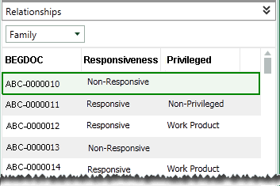
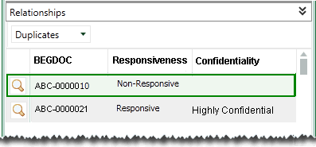

“Relationships” are based on the content of a specific field. When users select a particular record and view relationship details in Eclipse, the Relationships list presents all documents with matching field content (as in a field-specific search). The following relationships are included with Eclipse by default:
Family: intended to show documents that are related to one another, as in an email and its attachment. Family relationships are grouped by the BEGATTACH field and sorted by the BEGDOC field; you can define the details (fields and/or tag groups) to be included in the list.
Duplicates: intended to show documents that are the same or nearly the same in content. Duplicates are grouped by the MD5HASH field and sorted by the BEGDOC field; you can define the details (fields and/or tag groups) to be included in the list
Document History: displays history of actions such as redactions and tags applied to the selected document. Although not modifiable, this report can be secured.
If Eclipse Analytics is installed at your site, then Email Threading and/or Near Duplicates relationships may be configured.
Other relationships can be defined to meet the needs of your case review.
Related pages:
This figure shows the Family relationship in Eclipse.

In addition to the BEGDOC field, two tag groups (Responsiveness and Privileged) have been added by the administrator.
Another default relationship is the duplicates relationship for cases using an MD5Hash field. The following figure shows this relationship in Eclipse. In addition to the BEGDOC field, two tag groups (Responsiveness and Confidentiality) have been added by the administrator.
In this example, the administrator has included the document compare tool (as indicated by the magnifying glass button). This tool allows users to compare a document selected in the Documents (or Search Results, etc.) tab to one in the Relationships list.

Before defining a relationship, plan the type of information that will assist your users as they review case details, including the field upon which each relationship should be based, the field and tag details that should be displayed in the Relationships listing, and how the information should be sorted.